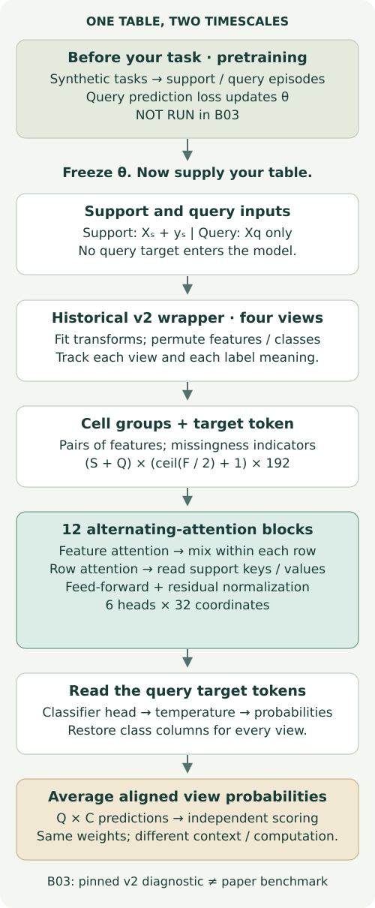

PFN and the TabPFN generations¶
B03 · Year 5 → 6 bridge · 25-minute core + notebook investigation
Your win: trace how a fixed pretrained model learns from support rows, then decide exactly which version, inference recipe and evidence support a claim.
B02 separated numerical representation from ensemble computation. It left a question: must every member learn new weights on your table? A PFN moves much of that learning into pretraining across tasks. At inference, the support table changes the prediction even when model weights stay fixed. For our relational mission, this matters because a flat-table foundation model is a serious baseline—but a strong flat-table result does not establish relational reasoning.
Retrieve before reading: What may validation labels select? Which information can a query row use? What distinguishes a checkpoint from a complete prediction pipeline? Prerequisites: conditional probability, weighted averages, attention's query/key/value roles; review L061, L062 and L064 if needed. B02 author preparation is not evidence that you have mastered it.
See the idea · then trace the details
PFN generations: separate pretraining from task context
Separate learning shared weights from conditioning those weights on a new table.
1Generate a task
Sample a function, then its labeled rows
A task prior produces a dataset. Split its rows into observed support and targets whose labels will be predicted.
2Learn across tasks
Many tasks → shared predictive weights
During pretraining, query-label loss updates one network across sampled tasks. The network learns how support relates to query predictions.
3Condition on a new table
Labeled support + unlabeled query → prediction
In the basic PFN use case, inference supplies a new context to fixed weights. No query label enters that context.
Pause and predict: What changes when you replace the support labels at inference?
The input context changes, so predictions can change even if no parameter is updated.
Answer: The input context changes, so predictions can change even if no parameter is updated.
1. Learn an inference rule before meeting this table¶
Imagine two hypotheses for a coin: H₁ has success probability .25, H₂ has probability .75. Give each prior weight .5. Three observed successes have likelihoods .25³ and .75³. Multiplying by the prior and normalizing gives posterior weights 1/28 and 27/28. The next-success prediction is (1/28)×.25 + (27/28)×.75 = 41/56 ≈ .73214. The hypothesis definitions did not change; the support evidence changed their weights.
This finite calculation is an exact Bayesian teaching oracle, not TabPFN's actual prior. PFNs approximate a related posterior-predictive mapping with a neural network trained on many sampled tasks. A task generator produces features and targets; training hides query targets from the input and minimizes query prediction loss. Once θ is learned, the model computes pθ(y_query | x_query, support) without requiring task-specific gradient updates. Approximation error and mismatch between synthetic and real tasks remain possible. PFN paper · TabPFN v1, §§2–3.
Trace it: With no observations, the finite model predicts .5. With three failures, it predicts 15/56. More support need not push confidence in the same direction. In the notebook, implement the normalization rather than calling a classifier API.
Recall the earlier conditioning visual
2. Model architecture: follow one prediction¶


The diagram makes the historical v2 path concrete. With S support rows, Q queries and F features, group pairs of feature values into G = ceil(F/2) groups and append a target token. The hidden table has shape (S+Q) × (G+1) × 192 (omitting batch). In each of 12 blocks, feature attention mixes information inside each row; row attention transfers support information across rows; a feed-forward transformation refines the representation. Six attention heads each have width 32. Query labels are unavailable. Query tokens attend to support keys/values in the historical model, while wrapper preprocessing must be audited separately. The query target representation feeds class logits. Visible L064 implementation · Nature paper, architecture and inference Methods.
A wrapper adds important work: fitting transformations, choosing feature/class permutations, applying temperature, restoring class meanings and averaging views. Four views of one checkpoint are four computations, not four independently pretrained models. The notebook includes the complete L064 educational model for inspection and the pinned original-release diagnostic driver. The new learner work targets posterior weighting, output alignment and contract matching; it does not reimplement every generation.
What stays fixed? In base ICL, θ stays fixed; context representations, caches and predictions change. Optional fine-tuning changes θ. B02's validation-selected ensemble changes which predictors are combined. These are different adaptation mechanisms. A cache is derived state, not evidence of new pretraining.
3. Generations change the contract¶
Read the matrix as reported operating envelopes and access distinctions, not measured B03 capacities or guaranteed hard limits. Only historical v2 is executed here, in a course diagnostic. Match the exact release before transferring any claim.
| Version / variant | Inputs and reported scale | Mechanism / missingness | Access boundary | Evaluation / computation contract |
|---|---|---|---|---|
| v1 | Numeric classification; ≤10 classes; 1k support rows / 100 features | Row tokens; no dedicated missingness channel | Released weights / inference | 18-task numeric benchmark; 5 resamples; typically 32 views |
| v2 | Numeric + categorical; classification (≤10 classes) / regression; 10k / 500 | Grouped cells; explicit missingness signals | Released weights; historical license | Nature: 10 repetitions; default 4 classifier / 8 regressor views; tuning separate |
| 2.5 | 50k design; evaluated to 100k / 2k features | Deeper alternating attention; 3-feature groups; 64 learned rows; inherited missingness encoding | Released weights with separate terms; API | TabArena and additional tasks; base / fine-tuned / ensemble differ; exact run recipe NOT_AUTHENTICATED here |
| 2.6 | Later interim release; summary lists 100k / 2k | Do not infer recipe from the 2.5 name | Release-specific weights / access | Inventory only: B03 does not authenticate a distinct 2.6 benchmark recipe |
| 3 base | Up to 1M rows / 2k features in report summary | Scaling, small cache, many-class decoder; missingness indicators | Released weights with separate terms; API | TabArena / TALENT; exact estimator count and split recipe NOT_AUTHENTICATED here |
| 3.5 base / Fast | Current release: up to 1M rows / 20k features; not a B03 measurement | Fourier + support ECDF and missingness signals; shared classification/regression checkpoint per variant | Base/Fast weights; separate weight terms | Report: base 8 views, Fast 4; exact benchmark recipe NOT_AUTHENTICATED here |
| 3 / 3.5 Plus, Thinking | Expanded system capabilities; version-specific modalities | Additional preprocessing / test-time computation; unreleased details stay unknown | Hosted offerings; base weights do not reproduce system | Pin API model, mode, time/selection budget; do not transfer headline scores to base |
The lineage is causal. V1 compresses each row into a token; v2 preserves more feature structure through alternating attention. The 2.5 report deepens this design, groups three features and adds 64 learned extra rows. Those learned rows are not the later API's Thinking mode. V3 adds scaling and many-class machinery. V3.5 moves more numerical representation into its cell encoder through Fourier and support-distribution features; its report removes earlier quantile/SVD wrapper transforms and uses eight base estimators versus four Fast estimators. This reconnects to B02: representation and ensembling still both matter. 2.5 §3 · 3 §2 · 3.5 §3.
The 2.5 report describes a 50k-row design while also evaluating up to 100k. Later summary tables list 100k. Keep intended design, evaluated range and current package guardrails separate. Similarly, accepting NaNs does not establish robustness when missingness changes between support and queries. B18a will test that shift explicitly.
Access is part of reproducibility. Distinguish downloadable code, weights and a hosted service. For later versions, consult each linked weight license separately from the package license; do not inherit v2 permissions. Availability of inference weights does not supply the full synthetic generator or training history. Plus and Thinking include additional inference behavior; do not invent unpublished internals. Official release and access documentation.
4. Test a symmetry, not just an accuracy¶
Class names are arbitrary. Let π map each original label to a new label. Run the same model with support labels π(y), then restore the prediction columns: aligned[:,c] = remapped[:,π(c)]. An equivariant predictor should agree with its original probabilities up to the declared numerical tolerance. This is a property to test, not a promise conferred by attention. EquiTabPFN, target-permutation formulation.
For π=[2,0,1], a new-order probability vector [.2,.1,.7] becomes [.7,.2,.1] in the old class order. Using the inverse permutation here is a common mistake; a binary swap cannot detect it because it is its own inverse. Use a three-cycle.
Measured: maximum aligned change 0.071617; accuracy 94.67% for every permutation. All five nonidentity maps exceed tolerance. Repeated identical-query prediction changes by 0. The independent audit reconciles all 450 probability rows. Raw evidence · Scalar audit.
The fixed diagnostic is sklearn Iris, all 150 rows,75 support / 75 query, stratified split seed 0, model seed 0, pinned v2 classifier, four views and CPU float32. We test all six label permutations with atol 1e-6 and rtol 0, chosen before execution. There is no class-cap workaround: this task has only three classes. All 450 probability rows and the 75-row repeat are retained. This is fresh pretrained inference, not fresh pretraining, a reproduction of EquiTabPFN, or a paper benchmark result. A single fixture supplies a counterexample; it does not estimate how often this happens.
A separate repeat after changing an unused copy of the scoring labels returned identical predictions. It confirms this worker passes query features only. It does not prove query-feature independence: L064 found historical preprocessing counterexamples where adding another query changes an existing prediction. Label isolation and query-batch independence are different tests.
5. The full-reproduction gate is part of the result¶
B03-TABPFNV2-BLOOD-OFFICIAL-SPLITS: INCOMPLETE_SOURCE_PROTOCOL. The approved target was default historical v2 on blood-transfusion across all ten official benchmark splits. The archived evaluation script imports a missing dataset loader. Its helpers disagree on split defaults; multiple OpenML tasks describe the same dataset. We cannot authenticate the exact paper split/configuration/checkpoint mapping or per-split reference. Source gate · Archive record · Reproduction protocol.
Consequently zero benchmark runs were dispatched. The Iris diagnostic does not fill the missing benchmark cell. The executable preflight refuses --run; archived source is preserved for recovery. Full original pretraining, all-dataset evaluation, tuned competitors and later-generation runs remain NOT_RUN. USD0 cloud/API spent; the approved ceiling is USD10 total, with USD2 reserved for overhead. Local numerical attempts are recorded separately under a 3600-second ceiling.
To unblock, recover the original loader and roster, authenticate all ten ordered row partitions and the complete inference configuration, link the checkpoint and numeric reference, then forecast the full run cost. Choosing a plausible modern default would answer a different question.
6. Practice, defend and revisit¶
Open the student notebook · Executed author solution · Field guide · Portable reproducer.
- TODO: implement finite-prior posterior prediction. CHECK: three successes yield 41/56; an impossible support event must fail explicitly.
- TODO: restore probability-column meanings. CHECK: a three-cycle and every saved diagnostic row agree with an independent scalar oracle.
- TODO: compare complete version/variant/checkpoint/recipe/data/split/budget contracts. CHECK: unknown fields yield INCOMPLETE; a known mismatch yields INCOMPARABLE. Matching is necessary, not proof of reproduced scores.
- EXIT: explain fixed θ versus changed context; draw the historical v2 input-to-output path; interpret unchanged accuracy with changed probabilities; specify two falsification tests; name exactly what would unblock the benchmark. State why a base result cannot substantiate a Thinking claim.
For practical comparisons, propose a tuned tree and a strong MLP, with common row identities and disclosed tuning/inference budgets. A v2-vs-v3.5 score difference would change several components at once; it is not an isolated architecture ablation. No such baseline fits are newly run in B03.
Primary reading: TabPFN-3.5 v2, §§3–4, followed by the historical v2 architecture Methods. Highlight which statements concern the base checkpoint versus the surrounding system. After completion, revisit in 1, 7 and 30 days: reconstruct the posterior example, align a new three-cycle, and audit a new model claim without looking at this matrix.
Ask the agent to check your trace or challenge your written defense. Author checks leave learner status PENDING_WRITTEN_DEFENSE. Next, B04 asks how TabICL compresses feature information before dataset-level attention; carry the same support/query and compute contract into that comparison.
Built with TabPFN. Historical v2 attribution and license: archived release.